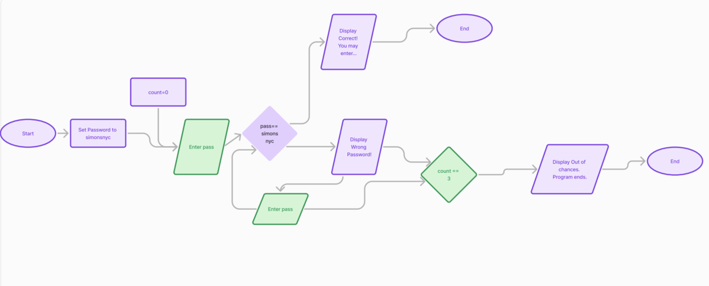

| ⋆CFU description⋆ |
⋆Flowchart⋆ |
CFU#1:
In this CFU we learned how to create variables, use input, and use print. Using those 3 things we were able to create a program that allows the user to input their first and last name and the computer will output "Hello" with their name. |
No flowchart |
CFU#2:
In this CFU we learned how to use int and str. Int is used for numbers and we use str to make it a string when using it with other strings. The program will prompt the user to answer questions and out a sentence with those answers |
No flowchart |
CFU#3:
In this CFU we learned how to do basic operations (multiplication, division, additon, and subtraction) using python. The programs prompts the user to enter their name and 2 numbers. The computer will then use those 2 number to run the operations and output what the equations are equal to |
No flowchart |
CFU#4:
In this CFU we learned what import math was which would allow us to use square root, absolute value, exponents, etc. We created a prorgram where the user is prompted to enter 2 numbers. Those 2 numbers will then go through the quadratic formula and then roots will be outputted |
No flowchart |
CFU#4:
In this CFU we learned what import math was which would allow us to use square root, absolute value, exponents, etc. We created a prorgram where the user is prompted to enter 2 numbers. Those 2 numbers will then go through the quadratic formula and then roots will be outputted |
No flowchart |
CFU#5:
For this CFU the user had to enter the amount of pennies, nickels, dimes,quarters, toonies, and loonies. The program we created will then calculate how much money the user has. |
No flowchart |
CFU#6:
In this CFU we created a program we used import random and import math to as the user to enter a number and then another number will be randomly picked by the computer. Those 2 number will then go through the operations the program has and ouput the answers to those equations. |
No flowchart |
CFU#7:
In this CFU we learned how to create functions. Using those functions the program will run finding the sum and average of the numbers. |
No flowchart |
CFU#8:
In this CFU we learned about if-else statement. Using that we created a program that ask the user if they ordered delivery and if they did the cost and the cost per person. |
No flowchart |
CFU#9:
In this CFU we created a program that ask the user how many times they want to roll the dice. For every round a random number will be picked and the user has to guess the number. |

|
CFU#10:
In this CFU the program uses import random to generate a random number. The user then has to guess the number that was generated.
|

|
CFU#11:
In this program the user get to pick what function they want to run. Once they input it the function will then run.
|

|
CFU#12:
In this the user get to pick what version they want. Version 1 allows the user to guess the password infinite times. Version 2 allows the user 3 guesses
|

|